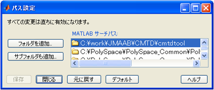

インストール方法と実行方法
(1) cmtdtool.zip を適当なフォルダに展開
(2) 上記(1)のフォルダをMATLABのパスに追加

(3) 展開したフォルダに含まれる次をMATLAB上で実行
cmtdtool_setup
※ このファイルの実行により、cmtdtoolのヘルプを利用環境で使用できるように 設定します。この設定には、MATLABバージョンに合わせた文字コード設定(SJIS,UTF-8) および、ヘルプの設定に必要なinfo.xmlファイル内のパス情報を設定します。
(4) コマンドウィンドウ上で次のコマンドを実行することによりcmtdtoolを起動
cmtdtool